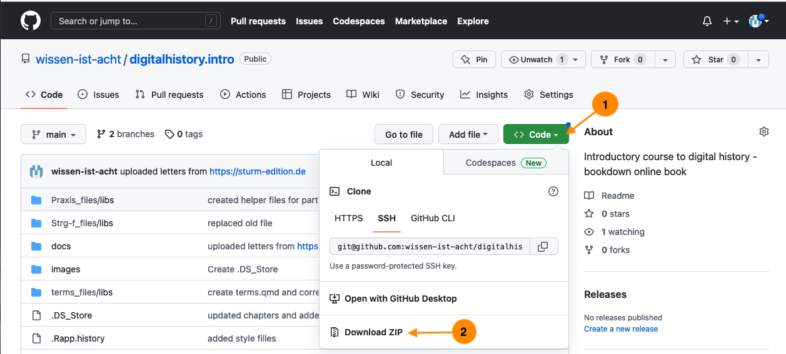
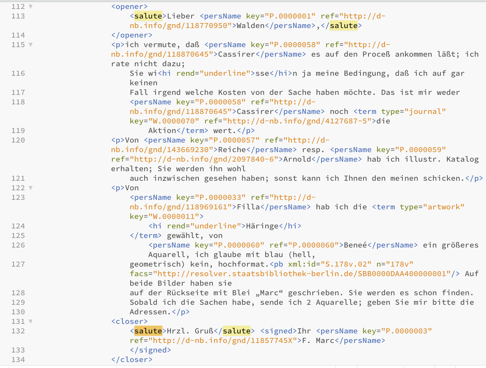

8 Through the Back Door
Before we take a closer look at the corpus of the letter edition, we’ll take a quick look at the possibilities of interacting with the computer, and how this can be useful for our work as historians, either for collecting, editing or analysing data.
There are two ways of interacting with (or using) a computer: via a Graphical User Interface (GUI), so by using the mouse and clicking on objects, or, somewhat more directly, via the command line.1 If you want to delete the file “letter1.txt” in the folder “letters” via GUI, you open the Finder (Mac), the Explorer (Windows) or the file browser of your choice (Linux), and click your way to the folder “letters”, click right on the file you want to delete (“letter1.txt), click “move to bin”, or drag it there directly with the mouse. The same action can be written as a command: You open the Terminal (Linux or Mac; open the Finder and enter “terminal” in the search window, then open the programme) or a Power Shell (Windows; click right on the start symbol, then choose “Windows Power Shell”), navigate to the relevant folder by entering a command, for instance cd Documents/letters + ‘Enter’ (Mac und Linux) or cd ./Documents/letters (Windows) and enter the command rm letter1.txt, which is executed by pressing ‘Enter’.
(base) serina00@dg-19-mac-02 ~ % cd Documents/letters(base) serina00@dg-19-mac-02 letters % rm letter1.txtHow to proceed in the command line/in the terminal using MacOS
The two methods differ in three points:
- The command
rmis final, the file is deleted without grace period in the bin. - The command is relatively simple to use for a number of documents at once, whereby quite different conditions can be taken into account, and it can be combined with other commands.
- Terminal looks k3wl.
Before we take a look at the second and for us most helpful difference, a brief note on the command line.
8.1 Shell 101
In a terminal/shell (see footnote for differentiation) commands or programmes can be executed that occur on the structural level – for instance deleting a file, rm filename.xyz (rm for remove), or creating a folder, mkdir NewFolder (mkdir for make directory). Equally possible are operations on a content level – such as searching for a certain term in a text file, grep 'term' textfile.txt (Mac/Linux) or Select-String -Path textfile.txt -Pattern 'term' (Windows), or counting terms and saving the results in a new file, grep -Ec '(term1|term2)' textfile.txt | wc -l > results.txt (Mac/Linux) or (Select-String -Path textfile.txt -Pattern '(term1|term2)'.Matches.Count > results.txt (Windows) – the commands will explained more fully below.
But how does your Shell know what it is supposed to do when you type rm or grep/String-Select? There are all sorts of Shell programmes that are already installed on your system and with which you can do a lot. Open your Shell, type in date and press ‘Enter’: You will see the current date and time appear. (Your Shell looks for the first argument, the command date, in the filesystem of your computer, and if it is successful, implements the action according to the given parameters.)
tmi: If you type in echo $PATH into the Terminal (Mac/Linux) or $env:PATH (Windows), you will see a list of the places in which a command is searched for. Type which date and press ‘Enter’ to see where the programme ‘date’ is on your computer.
If you type a command that does not exist, or for which there is no programme installed on your computer, you will get an error notification – you can’t do any damage.
(base) serina00@dg-19-mac-02 ~ % nonsensecommand not found: nonsenseThe windows output is a bit more extensive:
nonsense: The term 'nonsense' is not recognized as a name of a cmdlet, function, script file, or executable program.
Check the spelling of the name, or if a path was included, verify that the path is correct and try again.The current date is probably also shown in your toolbar, and you can create a new folder with a right click – you don’t really need the Terminal for that. To find a term in a text file you can open the document, press Ctrl-F, type in the term and see the result. If you want to search for more terms, you need to repeat the same action with Ctrl-F, term2. And if you want to search more than one file, perhaps to find out how often the salutation “Mit herzlichem Gruß” appears in a letter collection, you have to repeat the search in every file. If you then need to look for the variant “Mit herzlichen Grüßen” or even “Herzl. Gruß”, your work will be multiplied.
You can also do the same in the Terminal and use some of the built-in programmes to save yourself time and work.
8.2 Ctrl-F 2.0
As in the previous chapter, we are working with a part of the source corpus of the edition “Der Sturm”, with those letters written by Franz Marc.
To fully understand the following steps, please download the folder “letters_Der_Sturm”. You can either download the complete GitHub repository of this guide as a zip file, and find the folder “letters_Der_Sturm” in the folder “docs”.

You can clone the repository via the command line
git clone https://github.com/wissen-ist-acht/digitalhistory.intro.gitOr for a lazy option use this direct link.
If you want to use the website’s API you only need a few commands to get at the files.
With the first command we create a file, “letters_marc.xml”, with the file names of all the letters written by Franz Marc – from the register on the website we know that he has the person ID P.0000003; the URL of the API is in the documentation:
Mac/Linux:
curl https://sturm-edition.de/api/persons/P.0000003 --output letters_marc.xmlWindows:
Invoke-WebRequest -Uri "https://sturm-edition.de/api/persons/P.0000003" -OutFile "letters_marc.xml"If you open the file with an editor that can read XML files, you can see that next to the file names following “target=”, there are lots of things we do not need:
<person xmlns="http://www.tei-c.org/ns/1.0" source="http://d-nb.info/gnd/11857745X" xml:id="P.0000003">
<persName type="pref">Marc, Franz</persName>
<persName type="fn">Franz Marc</persName>
<linkGrp type="files">
<ptr n="Bl.375" target="Q.01.19191212.JVH.01.xml"/>
<ptr n="Bl.377" target="Q.01.19200114.JVH.01.xml"/>
<ptr n="Bl.219" target="Q.01.19160128.FMA.01.xml"/>
<ptr n="Bl.222" target="Q.01.19160205.FMA.01.xml"/>
<ptr n="Bl.223" target="Q.01.19160302.FMA.01.xml"/>
<ptr n="Bl.218" target="Q.01.19160101.FMA.01.xml"/>
<ptr n="Bl.221" target="Q.01.19160122.FMA.01.xml"/>
<ptr n="Bl.220" target="Q.01.19160115.FMA.01.xml"/>
<ptr n="Bl.207" target="Q.01.19150703.FMA.01.xml"/>
...We only really need the file names to download the files with the relevant command. We can also see that it is not only letters with the abbreviation “FMA” for Franz Marc that are listed, but also nine with “JVH”, Jacoba van Heemskerck.
If you open the relevant files, you can see that they are ones in which Franz Marc is mentioned and is tagged in TEI-XML with persName key="P.0000003" which is why they are part of the results listed. With a second command we then create a new file, in which the individual extracted file names are listed without those letters of Jacoba van Heemskerck, combined with the download command curl and supplemented with the relevant URL for the download:
Mac/Linux:
cat letters_marc.xml | grep -o 'Q.*FMA.*.xml\b' | perl -nle 'print "curl -o $_ https://sturm-edition.de/api/files/$_ "' > filenames_letters_marc.txtWindows:
Select-String -Path "letters_marc.xml" -Pattern 'Q.*FMA.*\.xml\b' | ForEach-Object {
$match = $_.Matches[0].Value
"curl -o $match https://sturm-edition.de/api/files/$match"
} > filenames_letters_marc.txtThe file “filenames_letters_marc.txt” looks like this:
curl -o Q.01.19160128.FMA.01.xml https://sturm-edition.de/api/files/Q.01.19160128.FMA.01.xml
curl -o Q.01.19160205.FMA.01.xml https://sturm-edition.de/api/files/Q.01.19160205.FMA.01.xml
curl -o Q.01.19160302.FMA.01.xml https://sturm-edition.de/api/files/Q.01.19160302.FMA.01.xml
curl -o Q.01.19160101.FMA.01.xml https://sturm-edition.de/api/files/Q.01.19160101.FMA.01.xml
curl -o Q.01.19160122.FMA.01.xml https://sturm-edition.de/api/files/Q.01.19160122.FMA.01.xml
curl -o Q.01.19160115.FMA.01.xml https://sturm-edition.de/api/files/Q.01.19160115.FMA.01.xml
curl -o Q.01.19150703.FMA.01.xml https://sturm-edition.de/api/files/Q.01.19150703.FMA.01.xml
curl -o Q.01.19150417.FMA.01.xml https://sturm-edition.de/api/files/Q.01.19150417.FMA.01.xml
curl -o Q.01.19151106.FMA.01.xml https://sturm-edition.de/api/files/Q.01.19151106.FMA.01.xml
curl -o Q.01.19150918.FMA.01.xml https://sturm-edition.de/api/files/Q.01.19150918.FMA.01.xml
curl -o Q.01.19150827.FMA.01.xml https://sturm-edition.de/api/files/Q.01.19150827.FMA.01.xml
curl -o Q.01.19150303.FMA.01.xml https://sturm-edition.de/api/files/Q.01.19150303.FMA.01.xml
...cat letters_marc.xml (Mac/Linux)/-Path "letters_marc.xml" (Windows) passes the content of the file to the Terminal; grep -o 'Q.*FMA.01.xml\b' (Mac/Linux) or Select-String -Pattern 'Q.*FMA.*\.xml\b' (Windows) finds all character strings between “Q” and “FMA.01.xml” in the list, with \b after “xml” marking the end of the pattern; the 45 discovered strings are then each written in a new line, with curl -o $_ giving the command curl -o and with $_ (Mac/Linux) or $match (Windows) as placeholder for the character string (i.e. the file name), followed by https://sturm-edition.de/api/files/$_ (Mac/Linux) or https://sturm-edition.de/api/files/$match(Windows) and again with $_ or $match the character string (again the file name). With a third command, bash, you execute the created file, meaning that the commands in the file will be executed and the letters downloaded via the command curl (Client URL).
bash filenames_letters_marc.txtHowever you have decided to download the files, you should now have 45 letters in XML format on your computer. Now open the Terminal (Mac/Linux) or the PowerShell (Windows) and with cd, change directory, navigate to the folder in which your text files are saved.
In my case this is in Documents/GitHub/digital_history_intro/docs/letters_Der_Sturm.
(base) serina00@dg-19-mac-02 ~ % cd Documents/GitHub/digital_history_intro/docs/letters_Der_Sturm`For most of you, it will probably be in “Downloads” – give it a try.
(In order to check what is in a folder, you can enter ls (for list) in the Terminal, or dir (for directory) in the PowerShell):
lsQ.01.19140115.FMA.01.xml Q.01.19150315.FMA.02.xml
Q.01.19140119.FMA.01.xml Q.01.19150327.FMA.01.xml
Q.01.19140121.FMA.01.xml Q.01.19150417.FMA.01.xml
Q.01.19140124.FMA.01.xml Q.01.19150501.FMA.01.xml
Q.01.19140125.FMA.01.xml Q.01.19150615.FMA.01.xml
Q.01.19140125.FMA.02.xml Q.01.19150703.FMA.01.xml
Q.01.19140409.FMA.01.xml Q.01.19150710.FMA.01.xml
Q.01.19140414.FMA.01.xml Q.01.19140421.FMA.01.xml
Q.01.19150827.FMA.01.xml Q.01.19140507.FMA.01.xml
...8.3 First Steps
Once you have navigated to the folder that has your letter files in them, instead of opening every single file as you would in a text editor, and searching with Ctrl-F, you can search for salutations with one single command. In the Terminal/in the PowerShell, with the programme grep (Global Regular Expression Print, Mac/Linux) or Select.String (Windows), you can search all the letters in the folder by including all files ending on “.xml” in the search. You can see the results – in this search for the salutations “Mit herzlichem Gruss” or “Mit herzlichen Grüssen” one hit per file – in your Terminal/PowerShell.
Mac/Linux:
grep -E -i '(Mit herzlichem Gruß|Mit herzlichen Grüßen)' *.xml Windows:
Select-String -Path *.xml -Pattern "(Mit herzlichem Gruß|Mit herzlichen Grüßen)"Output:
Q.01.19160115.FMA.01.xml: <salute>Mit herzlichen Grüßen für Sie beide</salute> <signed>Ihr <persName key="P.0000003" ref="http://d-nb.info/gnd/11857745X">F.Marc</persName>So the formulation “Mit herzlichen Grüßen” appears once in your corpus, in the document Q.01.19160115.FMA.01.xml.
You can also get the word count of the number of hits found on line level, -l, with wc-l (Mac/Linux), or Matches.Count (Windows) and write them into a new file with > (that will be created when you execute your command).
Mac/Linux:
grep -E -i '(Mit herzlichem Gruß|Mit herzlichen Grüßen)' *.xml | wc -l > count_greetings.txtWindows:
(Select-String -Path *.xml -Pattern "(Mit herzlichem Gruß|Mit herzlichen Grüßen)").Matches.Count > count_greetings.txtWhen you open the newly created file count_greetings.txt, which will be in the same folder as the letters, you should find that it says “1”, since our search gave us one hit.
The command grep (Mac/Linux) was given the additional parameter E in the above command, and the command Select.String (Windows) the parameter -Pattern, meaning that we are not looking for an exact string, but are using the option of pattern searches. These are formulated as so-called Extended Regular Expressions (that is where you get the E). We have not only searched for “Mit herzlichem Gruß”, but also for “Mit herzlichen Grüßen”, which we formulated with the symbol “|”, which here means “or”. With the help of regular expressions we can extend our search further and search for different variants at once.
Regular expressions have different flavours – depending on the programming language things are formulated in different ways, and some default settings differ. In our case, grep needs the parameter -i, in order to ignore upper/lower case. Select.String ignores it by default and does not need additional parameters. These details are important to know about when working with regular expressions, but is something you will learn on the go.
Mac/Linux:
grep -E -i '(Mit herzlichem Gru(ß|ss)|Mit herzlichen Grü(ß|ss)en|H(e|.?)rzl. Gru(ß|ss))' *.xml | wc -lWindows:
(Select-String -Path *.xml -Pattern "(Mit herzlichem Gru(ß|ss)|Mit herzlichen Grü(ß|ss)en|H(e|.?)rzl. Gru(ß|ss))").Matches.Count > count_greetings.txtWith this formulation you will find 17 hits for a salutation, with the possible variants of “Mit herzlichem Gruß”, “Mit herzlichem Gruss”, “Mit herzlichen Grüßen”, “Mit herzlichen Grüssen”, “Herzl. Gruß”, “Herzl. Gruss”, “Hrzl. Gruß”, “Hrzl. Gruss”.
If you would like to find out whether greetings were sent herzlich, hrzl. or freundlich you can modify the search and form of output:
Mac/Linux:
grep -E -i 'Gr(u|ü)(ß|ss)' *.xmlWindows:
Select-String -Path *.xml -Pattern "Gr(u|ü)(ß|ss)"Output:
Q.01.19140115.FMA.01.xml: stets sofort antworte; es muß verloren gegangen sein. Grüßen Sie bitte D<hi rend="super">
Q.01.19140119.FMA.01.xml: <salute>Hrzl. Gruß</salute> <signed>Ihr <persName key="P.0000003" ref="http://d-nb.info/gnd/11857745X">F. Marc</persName>
Q.01.19140125.FMA.02.xml: <salute>Hrzl. Gruß</salute>
Q.01.19140421.FMA.01.xml: <closer>Gute Besserung <persName key="P.0000002" ref="http://d-nb.info/gnd/118891456">Ihrer Frau</persName> u. <salute>viel Grüße von mir</salute> <signed>Ihr <persName key="P.0000003" ref="http://d-nb.info/gnd/11857745X">Fz Marc</persName>
Q.01.19140507.FMA.01.xml: <salute>besten Gruß</salute>
Q.01.19140831.FMA.01.xml: <salute>Hrzl. Gruß von Eurem Freund in Waffen</salute> <signed>
Q.01.19141113.FMA.01.xml: <salute>Hrzl. Gruß 1 x 2</salute> <signed>Ihr <persName key="P.0000003" ref="http://d-nb.info/gnd/11857745X">Fz. Marc</persName>
Q.01.19150112.FMA.01.xml: <salute>Hrzl. Gruß Ihnen beiden</salute>
Q.01.19150116.FMA.01.xml: <salute>Mit herzl. Gruß Ihnen beiden</salute> <signed>Ihr <persName key="P.0000003" ref="http://d-nb.info/gnd/11857745X">FrM</persName>.</signed>
Q.01.19150121.FMA.01.xml: <salute>Herzl. Gruß</salute> <signed>Ihr <persName key="P.0000003" ref="http://d-nb.info/gnd/11857745X">Fz. Marc</persName>
...With this command you are searching the text for the pattern Gr(u|ü)(ß|ss), so a phrase that starts with Gr or gr, followed by either a u or a ü, then followed by either a ß or ss. As we have not marked a word-end (you would do that with \b), you will also find “Grüße” or “Grüssen”.
If you have clicked your way through the letters while reading the previous chapter, you will have noticed that not all letters end on “Gruss” or “Grüssen”. In the output of the queries in the Terminal you can see that all salutations are surrounded by a tag-pair:<salute> marks the beginning of the salutation, </salute> the end. Open one of the letter files and search for “salute”. (If you do not have an XML capable editor on your computer, just open the file in your browser.)

As you can see, you twice have the tag-pair <salute>-</salute>, once framed by the tag-pair <opener>-</opener>, once by <closer>-</closer>. The address is marked with the first, the salutation with the second tag-pair. So when we are working with files that have been marked up according to fixed rules, we can search for the element of the salutation without first having to look at the texts and formulate various queries. Now we change the formulation of our query and search for a string of characters beginning with <closer>, followed by from zero to however many (.*) characters of the class cntrl, so invisible characters such as tabs, page breaks, or line breaks. Then follows <salute>, again followed by from zero to however many (.*) characters, followed by from zero to however many (.*) characters of class cntrl and again followed by from zero to however many (.*) characters, until you get to the beginning of the closing tag </salute>. Like this, you can cover all possible cases in the letters in which you find text or line breaks between <closer> and <salute> or not, and in which there is text, no text or a line break between <salute> and </salute>.
Mac/Linux:
grep -E -zo '<closer>[[:cntrl:]].*<salute>.*[[:cntrl:]].*<' *.xmlOutput:
Q.01.19140115.FMA.01.xml:<closer>
<salute>Hrzl.<
Q.01.19140119.FMA.01.xml:<closer>
<salute>Hrzl. Gruß</salute> <signed>Ihr <persName key="P.0000003" ref="http://d-nb.info/gnd/11857745X">F. Marc<
Q.01.19140121.FMA.01.xml:<closer>
<salute>Hrzl.</salute> <signed>Ihr <persName key="P.0000003" ref="http://d-nb.info/gnd/11857745X">FzMarc<
Q.01.19140125.FMA.02.xml:<closer>
<salute>Hrzl. Gruß<
Q.01.19140409.FMA.01.xml:<closer>
<salute>Herzl.<
Q.01.19140414.FMA.01.xml:<closer>
<salute>Hrzl.</salute> <signed>Ihr <persName key="P.0000003" ref="http://d-nb.info/gnd/11857745X">FMarc</persName>.<
Q.01.19140507.FMA.01.xml:<closer>
<salute>besten Gruß<
Q.01.19140512.FMA.01.xml:<closer>
<salute>Hrzl.</salute> <signed>Ihr <persName key="P.0000003" ref="http://d-nb.info/gnd/11857745X">Fr Marc<
Q.01.19140606.FMA.01.xml:<closer>
<salute>Hrzl.</salute> <signed>Ihr <persName key="P.0000003" ref="http://d-nb.info/gnd/11857745X">Fz. Marc<
Q.01.19140608.FMA.01.xml:<closer>
<salute>hrzl.</salute> <signed>Ihr <persName key="P.0000003" ref="http://d-nb.info/gnd/11857745X">F. Marc<
...If you want to write the results directly into a file you can of course also do that:
Mac/Linux:
grep -E -zo '<closer>[[:cntrl:]].*<salute>.*[[:cntrl:]].*<' *.xml > salutations.txtBut this is the moment, at the latest, to change your tools. You can do all sorts of things with the Terminal/Shell and there are any number of programmes you can install in addition – to parse XML files, to work on image files or to download Youtube videos. But it starts getting less and less neat and for the analysis of structural and textual data you can use programming languages like R or Python (as mentioned in ?sec-digitaletools which are more practical.
To continue working with the full text of the letters, be it for close reading or quantitative text analysis, you could, for example, strip the XML tags to achieve a better reading experience and to facilitate further analysis.
Command Line, Bash, Shell or Prompt are often found as synonymously used terms for command line interfaces. On UNIX-based operating systems like Mac OS and Linux the terminal is common as interface; details on: https://en.wikipedia.org/wiki/Command-line_interface#History. Windows users should be able to work quite well using the PowerShell, but might want to install Cygwin or MinGW, in order to be able to work with a UNIX-based interface.↩︎